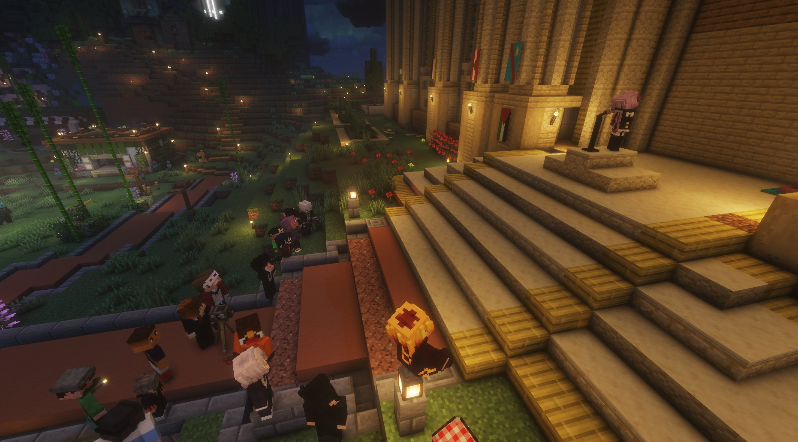

Sohalia secoue Karminéa : démission du conseil, appel à la justice et interpellation directe du président
Un discours sans ambiguïté, prononcé en pleine lumière. Sohalia n'a épargné personne — ni les révolutionnaires, ni le conseil, ni le président. Et Januk emboîte le pas.

Il y avait quelque chose d'inhabituel dans l'air ce soir devant la banque de Karminéa. Sohalia, co-directrice d'Horace Bank et membre du Conseil, a pris la parole publiquement face aux citoyens dans un discours coup de poing qui n'a épargné personne. Un moment rare, dit en pleine lumière, sans complot et sans calcul.
Une prise de parole sans ambiguïté
Dès les premiers mots, Sohalia a posé le cadre : elle ne cherche pas le pouvoir, elle ne monte aucun camp contre un autre. Son objectif est unique — rappeler que Karminéa a besoin d'un lieu juste, où l'éthique et la transparence priment sur la peur, le chantage et les intérêts personnels. Elle a dressé un tableau lucide de la crise : d'un côté une police largement détestée, de l'autre un président accroché à son statut, et entre les deux des révolutionnaires dont la cause est entendable mais dont les moyens sont inacceptables.
Aux révolutionnaires : la cause ne justifie pas tout
Sohalia dit comprendre la colère des révolutionnaires, reconnaît que le gouvernement est gangrené et que certains représentants ont abusé de leur pouvoir. Mais elle a été sans équivoque : les prises d'otages, les assassinats, les menaces de mort et la propagande qui force la population à choisir entre rejoindre le mouvement ou mourir ne sont pas des actes de justice — ce sont des actes de terreur.
Elle leur a lancé un appel direct : accepter, tôt ou tard, de répondre de leurs actes devant une instance réellement indépendante. Sans quoi, même la plus noble des révolutions finit par ressembler à ce qu'elle voulait détruire.
Démission du conseil : contester la structure, pas les hommes
Sohalia a annoncé qu'elle quitte le Conseil. Elle a précisé ne pas désigner ses membres comme corrompus — certains sont ses amis, ses alliés. Ce qu'elle conteste, c'est la structure elle-même : un Conseil formé par relations et bouche-à-oreille, où personne n'a été choisi par le peuple, et où ceux qui devraient être contrôlés siègent également comme organes de décision.
"Un organe de contrôle qui devient organe de décision n'est plus un garde-fou, c'est un huis clos."
— Sohalia
Le vide juridique : une urgence ignorée
Sohalia a pointé une lacune fondamentale : il n'existe à ce jour aucun organe juridique indépendant capable de juger les abus de la police, les dérives du pouvoir ou les actes des révolutionnaires. C'est dans ce vide que prospèrent les abus, les peurs et les extrêmes. Elle appelle à la mise en place rapide d'un organe indépendant, capable de juger policiers, révolutionnaires, conseillers, banquiers et présidents sans distinction.
Au président : des mots, enfin
La déception de Sohalia envers le président était palpable. Elle lui a reproché de n'avoir jamais pris la peine d'annoncer une ligne, une vision, un plan, laissant la ville vivre au rythme des réactions et des improvisations.
"Monsieur le Président, vous nous avez démontré que vous étiez capables de réunir une dizaine de gardes du corps pour vous protéger, mais êtes-vous capables de protéger vos citoyens de tous les abus qui ont été commis sur eux ?"
— Sohalia, devant la Banque
Sohalia reste à la tête de la Banque
Malgré sa démission du Conseil, Sohalia a affirmé qu'elle ne disparaît pas de la vie publique. Elle restera à la tête d'Horace Bank, là où son rôle est selon elle légitime et utile.
Januk emboîte le pas
À la fin du discours, Januk a pris la parole à son tour pour annoncer qu'il quitte lui aussi le Conseil. Deux départs en une soirée — un signal fort qui interroge sur la légitimité et l'avenir de cette institution.
"Si ce pays doit trouver un nouvel équilibre, il ne se construira ni sur la vengeance, ni sur le mensonge, ni sur la peur. Il se construira sur la vérité, sur la responsabilité et sur une justice impartiale pour tous."
— Sohalia